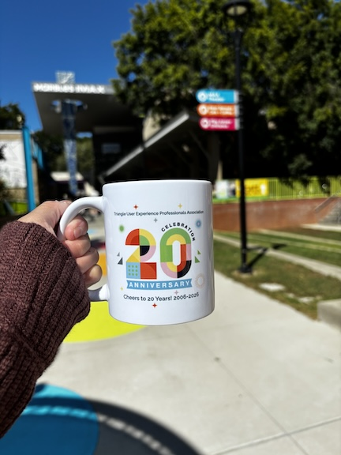
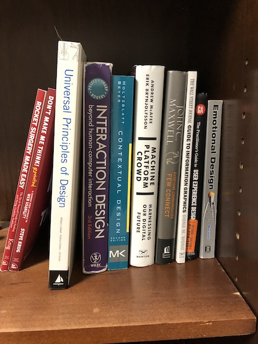
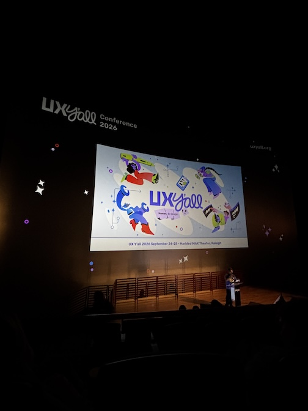

Design
I have expertise in both visual and information design working in various settings, ranging from ed-tech startups to software analytical companies. I currently have 6+ years of professional experience as a user experience design professional at SAS Institute, based in Cary, NC.
Examples of design experience include:
- Web UX Designer: Designed, implemented, updated, and managed digital experiences on SAS' marketing website using Adobe's content management system. Provided governance and oversight for the Digital Asset Management database.
- Design Systems UX Designer: Currently leading the research, strategy, documentation, and implementation for SAS UI/UX AI design patterns. Led a 3-month long project with four full-time designers to create a central repository of Generative AI design guidelines, standards, and best practices for SAS products and solutions.

Research
I have research experience in both the academic and industry setting. Most recently, my research focuses on the intersection of human-AI interaction and the sociotechnological effects of AI within the work and labor setting. I am currently gaining more research experience at UNC-Chapel Hill's School of Data and Information Sciences.
View my referred publications in the list below:
- Blyth, D. L., Jarrahi, M. H., Lutz, C., & Newlands, G. (2024). Self-branding strategies of online freelancers on Upwork. New Media & Society, 26(7), 4008-4033. 10.1177/14614448221108960.
- Jarrahi, M. H., Blyth, D. L, & Goray, C. (2022). Mindful work and mindful technology: Redressing digital distraction in knowledge work. Digital Business. 3. 100051. 10.1016/j.digbus.2022.100051.

Mentorship and Leadership
When not designing and researching for school or work, I enjoy volunteering, leading, mentoring, and connecting with the local design community.
Some mentorship and leadership positions I have enjoyed participating in include:
- Guest Portfolio Reviewer, Future Leaders of User Experience (2026): Attended an off-campus networking event geared toward rising UX professionals.
- SAS x NCSU College of Design - Sponsored Project @ North Carolina State University: Helped facilitate and give feedback to advanced design students at NCSU's College of Design working on designing AI agents.
